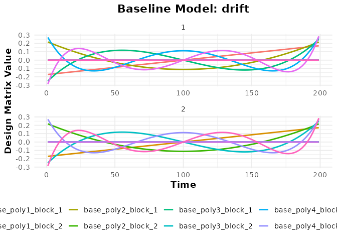
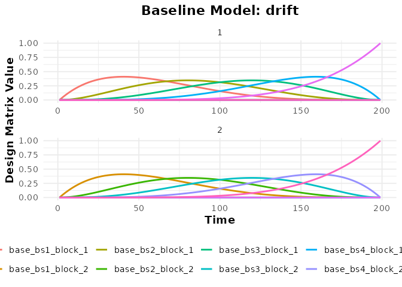
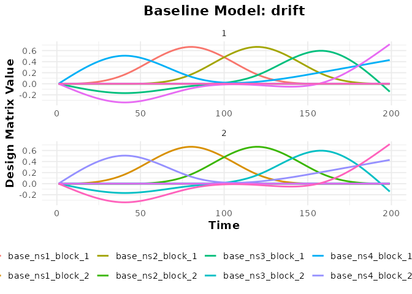
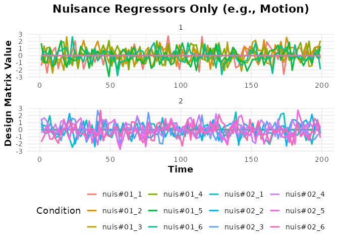
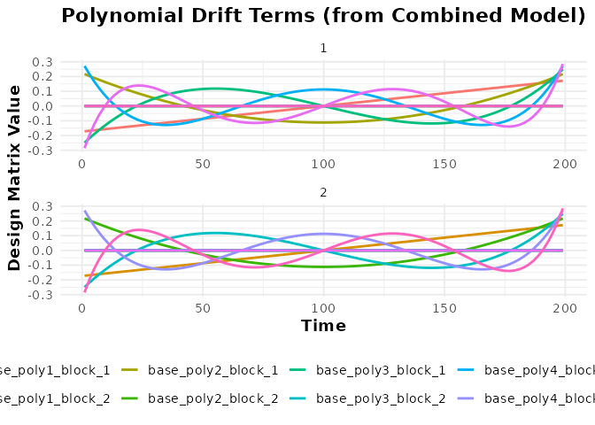

Modeling Baseline and Nuisance Effects
Bradley R. Buchsbaum
2025-09-15
Source:vignettes/a_03_baseline_model.Rmd
a_03_baseline_model.RmdThe Purpose of a Baseline Model
In fMRI analysis, the BOLD signal contains not only task-related activity but also various sources of noise and drift. A baseline model aims to capture and account for this non-neuronal variance, ensuring that estimates of task effects are more accurate.
These baseline regressors typically model low-frequency scanner drift (using basis functions) and other known sources of noise like head motion parameters or physiological fluctuations.
fmridesign uses the baseline_model()
function to construct this part of the design matrix.
Modeling Drift with Basis Functions
A common approach to modeling slow scanner drift is to include a set
of basis functions in the model for each run. fmridesign
supports several basis sets specified via the basis
argument:
-
"poly": Polynomial functions (orthogonalized). Usedegreeorpoly_degreeto specify the order. -
"bs": B-spline basis functions. Usedegreeto specify the number of splines. -
"ns": Natural spline basis functions. Usedegreeto specify the number of splines. -
"constant": Includes only an intercept term for each run.
These basis functions are generated separately for each scanning run
defined in the sampling_frame.
# Define a sampling frame for two runs of 100 scans each, TR=2s
TR <- 2
sframe <- sampling_frame(blocklens = c(100, 100), TR = TR)
# 1. Polynomial Basis (degree 5)
bmodel_poly <- baseline_model(basis = "poly", degree = 5, sframe = sframe)
print(bmodel_poly)
#> ================================================
#> Baseline Model
#> ================================================
#> Drift Components
#> * Name: baseline_poly_5
#> * Basis type: poly
#> * Degree: 5
#> * Drift columns: 10
#>
#> Additional Components
#> * Constant columns: 2
#> * Nuisance columns: 0
#>
#> Model Summary
#> * Total columns: 12
#>
#> Design Matrix Preview
#> -0.171 0.217 -0.249 0.271 ...
#> -0.168 0.204 -0.219 0.217 ...
#> -0.165 0.191 -0.190 0.167 ...
#> ================================================
# 2. B-spline Basis (degree 5)
bmodel_bs <- baseline_model(basis = "bs", degree = 5, sframe = sframe)
print(bmodel_bs)
#> ================================================
#> Baseline Model
#> ================================================
#> Drift Components
#> * Name: baseline_bs_5
#> * Basis type: bs
#> * Degree: 5
#> * Drift columns: 10
#>
#> Additional Components
#> * Constant columns: 2
#> * Nuisance columns: 0
#>
#> Model Summary
#> * Total columns: 12
#>
#> Design Matrix Preview
#> 0.000 0.000 0.000 0.000 ...
#> 0.048 0.001 0.000 0.000 ...
#> 0.093 0.004 0.000 0.000 ...
#> ================================================
# 3. Natural Spline Basis (degree 5)
bmodel_ns <- baseline_model(basis = "ns", degree = 5, sframe = sframe)
print(bmodel_ns)
#> ================================================
#> Baseline Model
#> ================================================
#> Drift Components
#> * Name: baseline_ns_5
#> * Basis type: ns
#> * Degree: 5
#> * Drift columns: 10
#>
#> Additional Components
#> * Constant columns: 2
#> * Nuisance columns: 0
#>
#> Model Summary
#> * Total columns: 12
#>
#> Design Matrix Preview
#> 0.000 0.000 0.000 0.000 ...
#> 0.000 0.000 -0.013 0.038 ...
#> 0.000 0.000 -0.026 0.077 ...
#> ================================================
# 4. Constant Basis (Intercept only per run)
bmodel_const <- baseline_model(basis = "constant", sframe = sframe)
print(bmodel_const)
#> ================================================
#> Baseline Model
#> ================================================
#> Drift Components
#> * Name: baseline_constant_1
#> * Basis type: constant
#> * Degree: 1
#> * Drift columns: 2
#>
#> Additional Components
#> * Constant columns: 0
#> * Nuisance columns: 0
#>
#> Model Summary
#> * Total columns: 2
#>
#> Design Matrix Preview
#> 1.000 0.000
#> 1.000 0.000
#> 1.000 0.000
#> ================================================Visualizing Baseline Regressors
We can use plot() to visualize the generated regressors.
The function returns a ggplot object.
Term Naming (clarification): - Term keys:
drift/block/nuisance (use these with term_name when
plotting). - Column names: typically prefixed by the baseline spec
(e.g., baseline_poly_5_b##). The constant block term is
named constant_* when present. Custom nuisance columns use
the nuisance term key and their internal column labels.
Plotting Specific Terms: You can plot specific terms
using the term_name argument. The plotting function
supports partial matching, so you can often use shorter names like
"poly", "bs", or "nuisance" if
they uniquely identify a term.
# Plot the polynomial regressors (term is named "drift")
plot(bmodel_poly, term_name = "drift")
# Plot the B-spline regressors
plot(bmodel_bs, term_name = "drift")
# Plot the Natural spline regressors
plot(bmodel_ns, term_name = "drift")
# Plotting the Constant (Intercept) term is generally not informative
print(bmodel_const) # Shows it has a 'constant' term
#> ================================================
#> Baseline Model
#> ================================================
#> Drift Components
#> * Name: baseline_constant_1
#> * Basis type: constant
#> * Degree: 1
#> * Drift columns: 2
#>
#> Additional Components
#> * Constant columns: 0
#> * Nuisance columns: 0
#>
#> Model Summary
#> * Total columns: 2
#>
#> Design Matrix Preview
#> 1.000 0.000
#> 1.000 0.000
#> 1.000 0.000
#> ================================================Notice how the regressors are generated independently for each block
(run) specified in the sampling_frame.
Intercept Control
The intercept argument controls whether additional
intercept columns are added beyond the drift term: -
"runwise": adds one intercept per run (default for
non-constant bases). - "global": adds a single global
intercept across all runs. - "none": adds no extra
intercepts. Note that the "constant" basis already provides
a constant drift term.
Adding Arbitrary Nuisance Regressors
Beyond structured drift terms, we often want to include other
regressors derived from data (e.g., motion parameters, physiological
recordings, CSF signal). These can be added using the
nuisance_list argument.
Important: The nuisance_list must be a
list where each element corresponds to a scanning run. Each
element should be a data.frame or matrix
containing the nuisance regressors for that specific run. These will be
grouped under the term name "nuisance".
# Simulate nuisance regressors (e.g., 6 motion parameters)
n_scans_run1 <- blocklens(sframe)[1]
n_scans_run2 <- blocklens(sframe)[2]
# Create nuisance data frames for each run
nuis_run1 <- as.data.frame(matrix(rnorm(n_scans_run1 * 6), n_scans_run1, 6))
names(nuis_run1) <- paste0("motion_", 1:6)
nuis_run2 <- as.data.frame(matrix(rnorm(n_scans_run2 * 6), n_scans_run2, 6))
names(nuis_run2) <- paste0("motion_", 1:6)
# Combine into a list
nuisance_regressors <- list(nuis_run1, nuis_run2)
# Create a baseline model including only these nuisance regressors
# (Set basis = NULL, degree = 0 to exclude drift terms)
bmodel_nuis_only <- baseline_model(basis = NULL, degree = 0, sframe = sframe,
nuisance_list = nuisance_regressors)
print(bmodel_nuis_only)
#> ================================================
#> Baseline Model
#> ================================================
#> Drift Components
#> * Name: baseline_constant_1
#> * Basis type: constant
#> * Degree: 1
#> * Drift columns: 2
#>
#> Additional Components
#> * Constant columns: 0
#> * Nuisance columns: 12
#>
#> Model Summary
#> * Total columns: 14
#>
#> Design Matrix Preview
#> 1.000 0.000 -1.400 -0.387 ...
#> 1.000 0.000 0.255 -0.785 ...
#> 1.000 0.000 -2.437 -1.057 ...
#> ================================================
# Plot the nuisance regressors (term_name = "nuisance")
plot(bmodel_nuis_only, term_name = "nuisance") +
labs(title = "Nuisance Regressors Only (e.g., Motion)")
Combining Basis Sets and Nuisance Regressors
You can include both a structured basis set (like polynomials) and custom nuisance regressors in the same baseline model.
bmodel_combined <- baseline_model(basis = "poly", degree = 5, sframe = sframe,
nuisance_list = nuisance_regressors)
print(bmodel_combined)
#> ================================================
#> Baseline Model
#> ================================================
#> Drift Components
#> * Name: baseline_poly_5
#> * Basis type: poly
#> * Degree: 5
#> * Drift columns: 10
#>
#> Additional Components
#> * Constant columns: 2
#> * Nuisance columns: 12
#>
#> Model Summary
#> * Total columns: 24
#>
#> Design Matrix Preview
#> -0.171 0.217 -0.249 0.271 ...
#> -0.168 0.204 -0.219 0.217 ...
#> -0.165 0.191 -0.190 0.167 ...
#> ================================================
# Check the terms included
term_names <- names(terms(bmodel_combined))
print(term_names) # e.g., constant, baseline_poly_5, nuisance
#> [1] "drift" "block" "nuisance"
terms(bmodel_combined) # List all terms in the model
#> $drift
#> fmri_term: baseline_term
#> Term Name: baseline_poly_5
#> Num Rows: 200
#> Num Columns: 10
#>
#> $block
#> fmri_term: baseline_term
#> Term Name: constant
#> Num Rows: 200
#> Num Columns: 2
#>
#> $nuisance
#> fmri_term: baseline_term
#> Term Name: nuisance
#> Num Rows: 200
#> Num Columns: 12
# Plot the drift terms (polynomial basis)
plot(bmodel_combined, term_name = "drift") +
labs(title = "Polynomial Drift Terms (from Combined Model)")
# Plot the nuisance terms (using exact match "nuisance")
plot(bmodel_combined, term_name = "nuisance") +
labs(title = "Nuisance Terms (from Combined Model)")

Accessing the Design Matrix
The full design matrix for the baseline model (containing all basis
and nuisance regressors, properly formatted per block) can be obtained
using design_matrix().
dmat_baseline <- design_matrix(bmodel_combined)
cat("Dimensions of baseline design matrix:", dim(dmat_baseline), "\n")
#> Dimensions of baseline design matrix: 200 24
cat("Column names:", paste(colnames(dmat_baseline)[1:10], "..."), "\n")
#> Column names: base_poly1_block_1 ... base_poly2_block_1 ... base_poly3_block_1 ... base_poly4_block_1 ... base_poly5_block_1 ... base_poly1_block_2 ... base_poly2_block_2 ... base_poly3_block_2 ... base_poly4_block_2 ... base_poly5_block_2 ...
head(dmat_baseline[, 1:8]) # Show first few columns
#> # A tibble: 6 × 8
#> base_poly1_block_1 base_poly2_block_1 base_poly3_block_1 base_poly4_block_1
#> <dbl> <dbl> <dbl> <dbl>
#> 1 -0.171 0.217 -0.249 0.271
#> 2 -0.168 0.204 -0.219 0.217
#> 3 -0.165 0.191 -0.190 0.167
#> 4 -0.161 0.178 -0.163 0.122
#> 5 -0.158 0.166 -0.137 0.0813
#> 6 -0.154 0.154 -0.113 0.0452
#> # ℹ 4 more variables: base_poly5_block_1 <dbl>, base_poly1_block_2 <dbl>,
#> # base_poly2_block_2 <dbl>, base_poly3_block_2 <dbl>
# Visualize the full baseline matrix as a heatmap (optional)
# design_map.baseline_model(bmodel_combined, rotate_x_text = TRUE)This baseline design matrix is combined with the task-related design
matrix (from an event_model) within functions like
fmri_model or fmri_lm to create the complete
design matrix for GLM analysis.